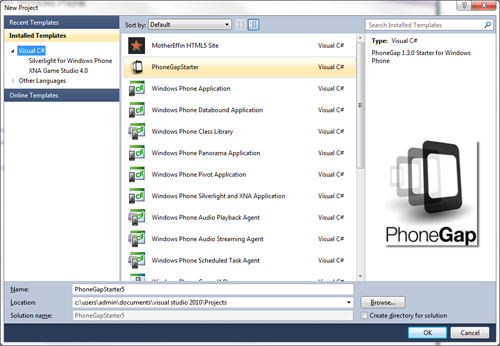
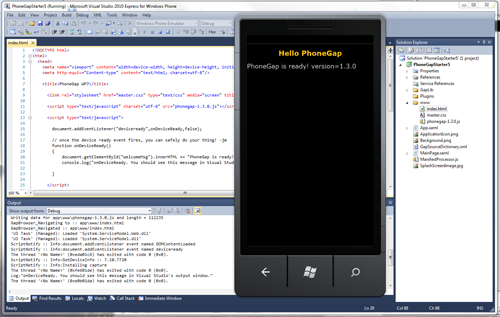
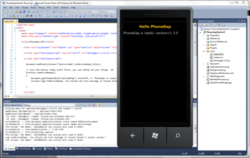
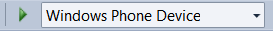

Getting Started with Windows Phone
Video Tutorials:
1. Requirements
- Windows 7 or Windows Vista with SP2
Note: Running in VM has issues, if you are on a Mac, you will need to setup a bootcamp partition with Windows 7 or Vista
Necessary for Installing on Device and Submitting to Market Place:
- Become an App Hub member.
2. Install SDK + PhoneGap
- Download and install Windows Phone SDK
- Donwload the latest copy of PhoneGap and extract its contents. We will be working with the Android directory.
3. Setup New Project
- Open Visual Studio Express for Windows Phone and choose New Project.
- Select PhoneGapStarter.
-
Give your project a name, and select OK.

4. Review the project structure
- The 'www' folder contains your PhoneGap html/js/css and any other resources included in your app.
-
Any content that you add here needs to be a part of the Visual Studio project, and it must be set as content.

5. Build and Deploy to Emulator
- Make sure to have Windows Phone Emulator selected in the top drop-down menu.
-
Hit the green play button beside the Windows Phone Emulator drop-down menu to start debugging or press F5.
 

6. Build your project for the device
In order to test your application on a device, the device must be registered. Click here.aspx) to read documentation on deploying and testing on your Windows Phone.
- Make sure your phone is connected, and the screen is unlocked
- In Visual Studio, select 'Windows Phone Device' from the top drop-down menu.
-
Hit the green play button beside the drop-down menu to start debugging or press F5.

Done!
You can also checkout more detailed version of this guide here.